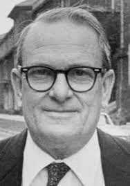

SCIENCE AFRIQUE
Les inventions scientifiques d'Afrique
Préambule
L'Afrique est actuellement le deuxième continent le plus peuplé au monde. Elle n'est pas en marge du progrès technologique. Elle regorge de nombreux acteurs, qui pour la plupart agissent dans l'ombre mais permettent le dénouement de situations complexes.
Cardio Pad
de Mr Arthur Zang
Cet ingénieur a fabriqué une tablette spéciale avec un écran tactile qui a la capacité de faciliter les examens cardiaques. Mais ce qui rend particulier son appareil, c’est qu’on peut l’utiliser même pour des examens à effectuer dans un endroit éloigné. Ainsi, les résultats obtenus peuvent être envoyés directement grâce à un réseau sans fil, à des spécialistes ou des laboratoires afin de subir des analyses plus profondes. Mais ce qui rend particulier son appareil, c’est qu’on peut l’utiliser même pour des examens à effectuer dans un endroit éloigné. Ainsi, les résultats obtenus peuvent être envoyés directement grâce à un réseau sans fil, à des spécialistes ou des laboratoires afin de subir des analyses plus profondes.
Telluromètre
du Dr Trevor Lloyd Wadley

Le docteur Trevor Lloyd Wadley vient d'Afrique du Sud . C'est l'ingénieur qui a développé et inventé le Telluromètre ou micro-distancemètre MRA 1, en 1959. Avec son appareil, il a pu développé un ionsonde qui a la capacité de mesurer l'inosphère de la planète terre. C'est également cet ingénieur qui a déterminé le circuit en boucle de Wadley. Ce circuit a permis de stabiliser les récepteurs de communication.
Le scanner
de Mr Allan McLeod Cormack

Ce fameux appareil qu'on utilise très souvent dans les hôpitaux est aussi l'invention d'un africain. En effet, le scanner est l'ingénieur travail du physicien Allan McLeod Cormack originnaire d' Afrique du Sud. Avant sa construction, le physicien avait fait une étude sur les probabilités de développement d'une section radiologique dans le système biologique. Ce qui lui permettra de définir des théories et des bases sur la construction du scanner CT. Sa théorie dans des documents scientifiques en 1963 et 1964. C'est à partir de ses théories que le britannique Godfrey Hounsfield construira les fameux scanners CAT très utilisés actuellement dans les grands hôpitaux. En 1979, les deux scientifiques se sont vus octroyés le prix nobel de la science sur ce projet et cet appareil qui a révolutionné le monde médical.
Batteries au lithium-ion
de Mr Rachid Yazami
On reconnaît cette invention de Rachid Yazami, d’origine marocaine , étant donné que la plupart d’entre nous l’utilise tous les jours. En effet, ce scientifique marocain a basé son étude dans la recherche et le développement des batteries au Lithium-ion et en ion pour faire fonctionner les téléphones portables. Son invention est actuellement, très utilisée par des firmes fabricants de Smartphones comme Samsung, Nokia ou encore Apple. À noter que Yazami est une scientifique qui sort du prestigieux Institut Polytechnique de Grenoble où elle a acquis un diplôme d’ingénieur et un Ph. D.
Moulin à vent
de Mr William Kamkwamba

Né et habitant au Malawi, William Kamkwamba est un autodidacte qui a réussi à fabriquer un moulin à vent générateur d’électricité qu’il installa pour sa maison. Pour sa fabrication, le malawite a utilisé des vieux pièces de vélo ainsi que des matériaux qu’il a trouvé dans un chantier naval. En plus de cette invention atypique, William a également développé un appareil qui permet de pomper l’eau avec l’énergie solaire. Une autre invention qu’il a offert à son village pour que tout le monde puisse en bénéficier.
Le Cybertracker
de Mrs Louis Stevenson et Liebenberg Lindsay
Ces deux inventaires sont nés en Afrique du Sud . Ils ont créé et inventé le Cybertracker qui est un terminal portatif ayant la capacité de suivre la trace des animaux mis en liberté. La spécificité de cet appareil c’est qu’il est connecté au réseau satellite pour permettre la navigation sur un territoire donné. C’est également un outil avant-gardiste étant donné que ces inventeurs l’ont fabriqués en 1996. Par ailleurs, l’appareil est utilisable, même pour les analphabètes , grâce à une interface spécifique installée sur le Cybertracker.
Réducteur de niveau de bruit
de Mrs Gordon Mayhew-Ridgers et Paul Van Jaarsveld
Ces inventeurs viennent également d’Afrique du Sud. Ils ont réussi à développer une technologie qui permet aux antennes cellulaires de réduire le niveau de bruit qu’elles dégagent. En effet, la plupart du temps, les stations de base cellulaire sont très bruyantes. La technologie de Gordon Mayhew-Ridgers et de Paul Van Jaarsveld a ainsi été installé en Afrique du Sud dans la station de Vodacom.
Colle
de Mr George Pratley
George Pratley a inventé une colle qui a déjà voyagé sur la lune. Ce Sud-Africain a permis à l’équipage d’Apollo XI, en 1969, de recoller les morceaux de leurs navettes et de revenir sur terre, avec la colle Pratley. Par cet exploit, cette colle Sud-Africaine a eu un succès à travers le monde.
L’aspirateur nettoyant de piscine
de Mr Ferdinand Chauvier
Ingénieur en hydraulique, Ferdinand Chauvier est le Sud-Africain père de l’aspirateur nettoyant de piscine. Cet aspirateur spécial permet d’aspirer automatiquement les saletés de la piscine en étant alimenté par le système de filtre du bassin. Cette invention est très utilisée en Afrique du Sud et également, exportée dans plusieurs pays à travers le monde.
Le pistolet de vitesse
de Mr Henri Johnson
Le pistolet de vitesse est un appareil très utilisé dans le domaine du sport comme le softball, le baseball ou encore le tennis Le pistolet de vitesse est un appareil très utilisé dans le domaine du sport comme le softball, le baseball ou encore le tennis pour mesurer la vitesse de la balle. C’est aussi un appareil de sécurité qu’on utilise chez les policier qui traquent les mordus de vitesse sur route. Mais ce sont surtout les joueurs de crickets qui l’utilisent très fréquemment. L’appareil est ainsi, devenu un indispensable durant les compétitions et les matchs de crickets et a été utilisé pour la première fois lors de la coupe du monde de cricket qui s’était déroulé en Angleterre en 1999.